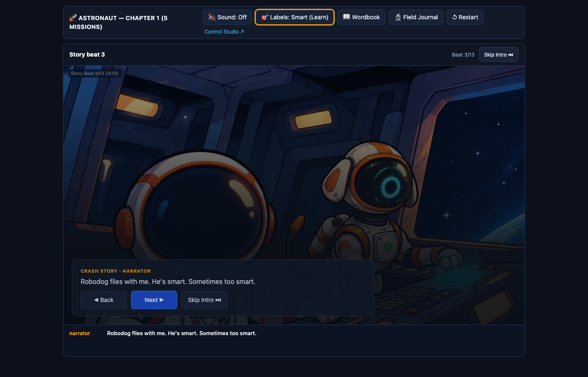
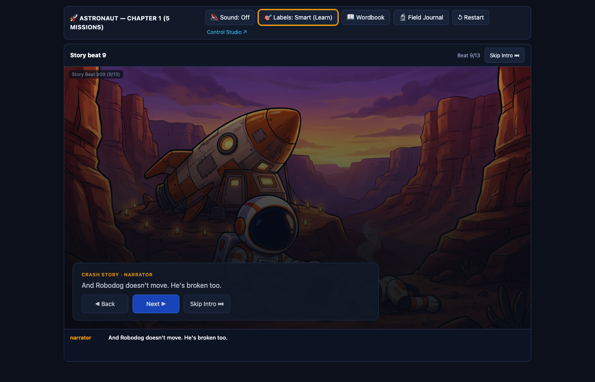
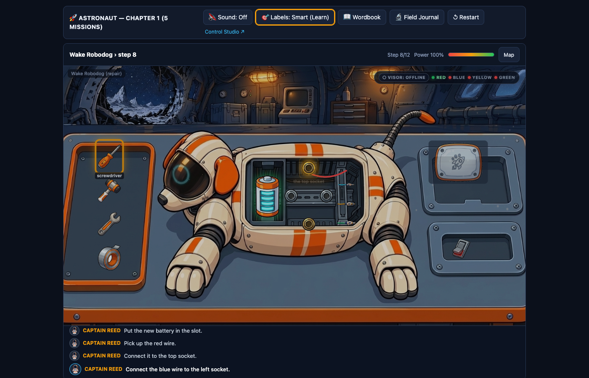
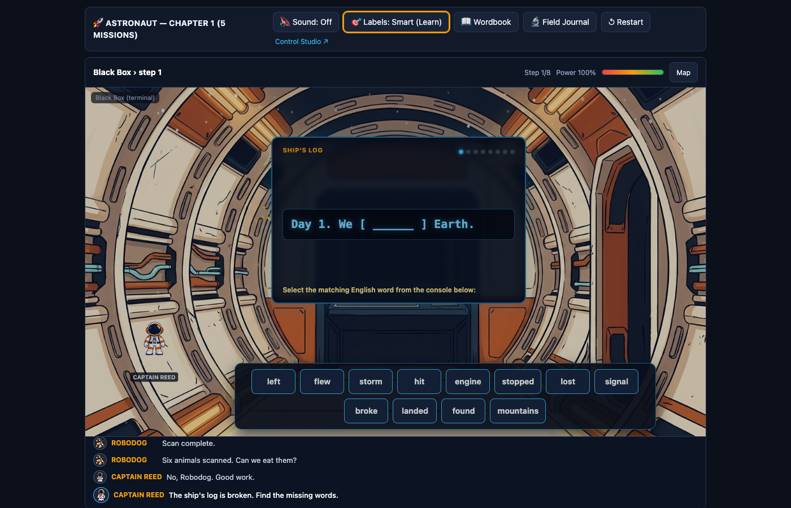
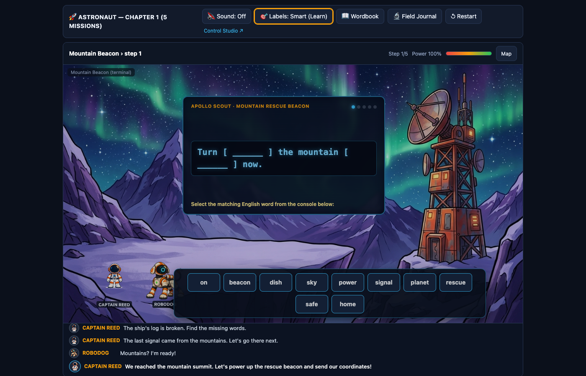
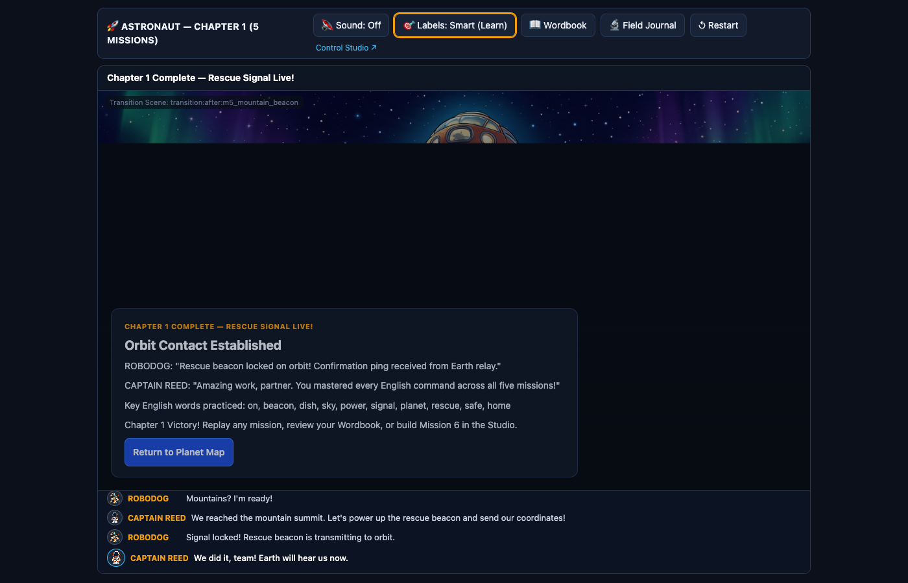
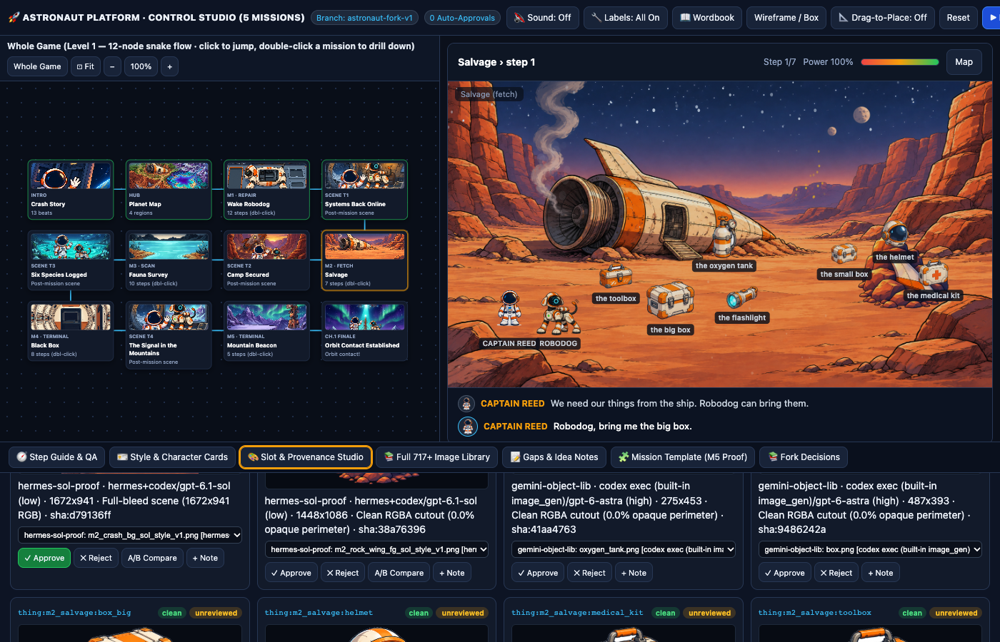
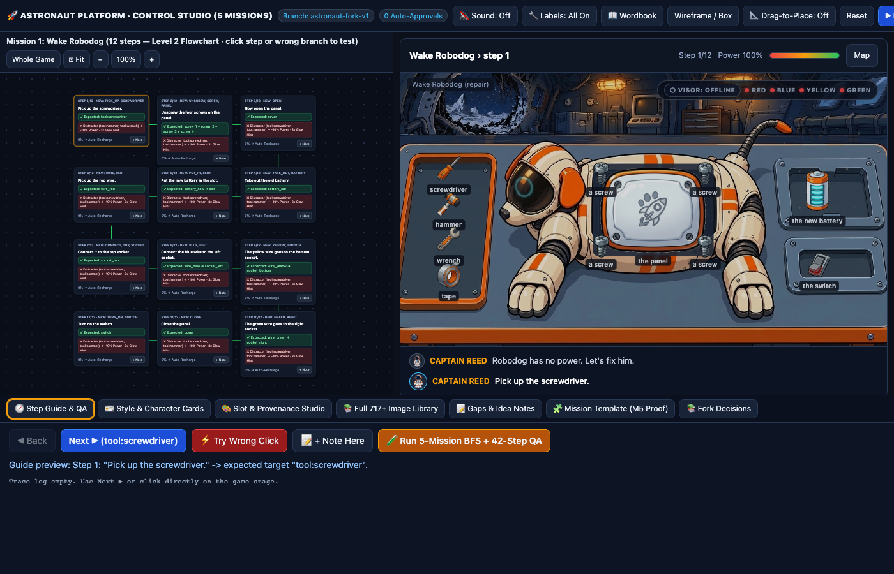
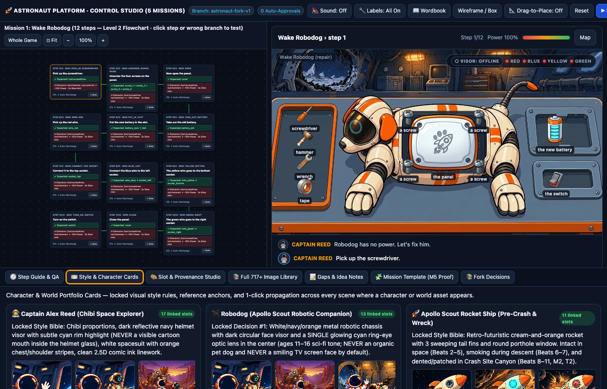
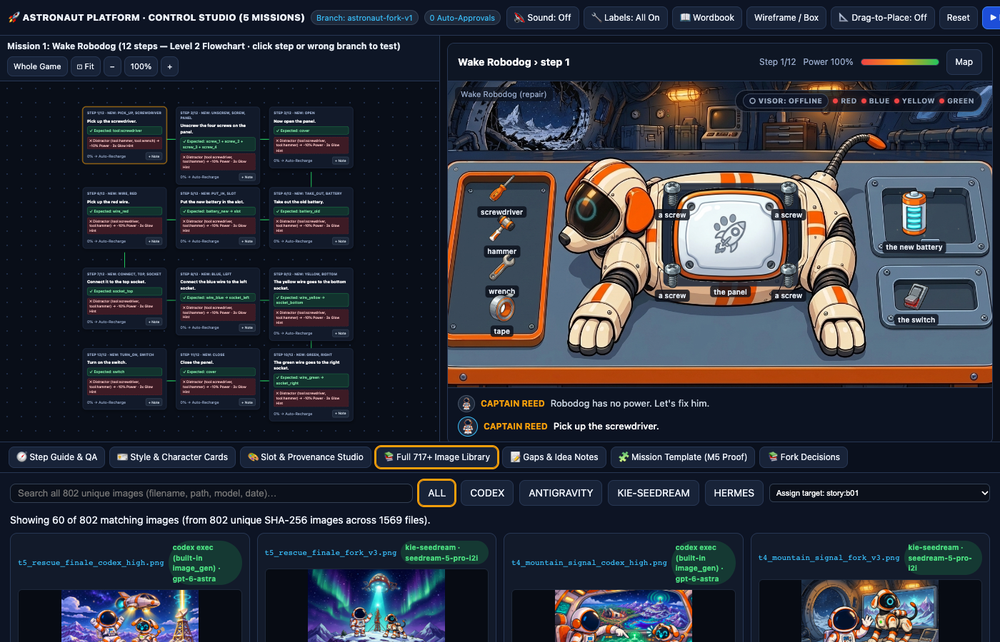

🚀 Astronaut Fork v3 · Full 5-Mission Chapter 1 + Control Studio
Astronaut — English Adventure Game & Visual Production Studio
Help Captain Alex Reed and his robotic co-pilot Robodog (Apollo Scout)
survive a crash landing on an unknown alien planet across 5 interactive missions (42 steps)
and 5 post-mission narrative cutscenes—or open the Control Studio to explore
the 2-level mission flowcharts, swap character & biome art across scenes, and browse all 802 project images.
✨ What Is Done & What Was Added
🕹️ Complete 5-Mission Playable Campaign
- 13-Beat 2.5D Color Comic Intro: Full-color widescreen story panels matched to every beat (leaving Earth, Robodog co-piloting, asteroid storm, crash landing, low oxygen/power, and workbench prep).
- M1 · Wake Robodog (Repair · 12 steps): Robodog lying on the workbench with open chest bay, vertical tool tray, battery swap, live draggable sagging Bezier cables, and glowing cyan ring-eye wake-up payoff.
- M2 · Salvage the Camp (Fetch · 7 steps): Command Robodog to dash and retrieve 7 survival supplies in the red canyon.
- M3 · Fauna Survey (Scan · 10 steps): Laser-scan 6 animated alien creatures (with full sky/lake patrol loops) into the Field Journal.
- M4 · Ship Core Black Box (Terminal · 8 steps): Reconstruct Captain Reed's Ship's Log inside the fitted CRT monitor bezel with a docked word-bank keypad.
- M5 · Mountain Rescue Beacon (Template Proof · 5 steps): Power up the summit radio dish under the aurora sky and establish orbit rescue contact—built 100% from a declarative JSON template with 0 engine code edits.
🎛️ Control Studio & Learning Upgrades (Fork v3)
- 3-Mode Smart Label System: Cycles between
🎯 Smart (Learn) (hides item text spoilers until hovered, clicked, or 3x-mistake gold hint glow), 🎓 Study (On Mistake), and 🔧 All On.
- Level-1 Auto-Fit Snake Flowchart: 12 campaign nodes with live scene thumbnails, clean directional arrows, and auto-fit to viewport (
⊡ Fit).
- Level-2 Multi-Row Mission Flowchart: Double-click any mission to inspect all steps, green
✓ Expected targets, red clickable ✕ Distractor test branches, and inline + Note buttons.
- 🪪 Style & Character Cards: Top-level cards for Captain Alex Reed, Robodog (Apollo Scout), Apollo Scout Rocket, and 4 Planet Biomes with 1-click variant propagation across all scenes.
- 📚 Full 802-Image Provenance Library: Searchable catalog of all 802 unique SHA-256 images across 1,569 files with maker/model filters and live slot assignment.
📸 Short Screenshot Tutorial: How to Use It
STEP 1
Start the Intro Story & Choose Your Label / Audio Mode
Click ▶ Play Standalone Game.
Step through the 13 illustrated crash story beats with Next. In the top bar, toggle
🔇 Sound: Off / 🔊 Sound: On for background music & voiceovers, or click
🎯 Labels: Smart (Learn) to switch between spoiler-free English learning mode and developer labels.

Intro Beat 3: Chibi Captain Alex Reed & ring-eye Apollo Scout Robodog in the cockpit.

Intro Beat 9: Crashed Apollo Scout rocket and offline Robodog in the red rocky canyon.
STEP 2
Mission 1: Repair Robodog on the Workbench (Click or Drag Live Cables!)
Select Crash Site → Wake Robodog on the Planet Map. Read Captain Reed's English commands in the
bottom dialogue strip: pick up the screwdriver from the left tray, unscrew the 4 corner screws, open Robodog's chest cover,
swap the old and new batteries, and drag each colored wire (red, blue, yellow, green) to its matching directional socket
(or click the wire, then click the socket). If you make 3 wrong clicks, the target glows gold to help you!

Mission 1: Robodog lying on the repair workbench with live sagging SVG Bezier cables and 4-LED circuit bar.
STEP 3
Missions 4 & 5: Reconstruct the Ship's Log & Transmit the Rescue Signal
In Mission 4 (Black Box) and Mission 5 (Mountain Beacon), read the sentence inside the
dark cockpit/holo screen bezel and click the missing English words from the docked word-bank keypad at the bottom.
Check your learned vocabulary anytime in 📖 Wordbook or inspect scanned alien wildlife in 🔬 Field Journal.

Mission 4: Fitted CRT monitor bezel with glowing cyan phosphor text and bottom-docked word bank.

Mission 5: Clean character-free mountain summit backdrop with live Captain Reed & Robodog sprites.

Transition T5 (Chapter 1 Finale): Rescue ship arriving over the aurora mountain beacon.
STEP 4
Control Studio: Explore the 2-Level Flowchart & Test Wrong-Click Branches
Open 🎛️ Control Studio (studio.html).
The left pane shows the Level-1 Whole Game Snake Flowchart (12 nodes). Click any node to jump the live game stage
to that scene, or double-click any mission node to drill down into its Level-2 Step Flowchart—complete
with green expected targets, red clickable distractor branches, and inline + Note buttons.

Level 1: Auto-fitted 12-node campaign snake flow on the left + live playable Mission 2 stage on the right.

Level 2: Multi-row Mission 1 step flowchart with Expected targets, Distractor test buttons, and +Note.
STEP 5
Use Style & Character Cards and Browse the Full 802-Image Library
Use the bottom Control Studio tabs to switch between 🧭 Step Guide & QA (run the 9,754-state BFS verifier in 1 click),
🪪 Style & Character Cards (propagate a character or biome variant across every scene at once),
🎨 Slot & Provenance Studio (A/B compare and approve/reject slot candidates), and
📚 Full 717+ Image Library (search all 802 unique SHA-256 images by maker, model, or filename).

Style & Character Portfolio Cards with locked visual rules and cross-scene slot chips.

Full 802-Image Library Browser with maker filters (ALL, CODEX, ANTIGRAVITY, KIE-SEEDREAM, HERMES).